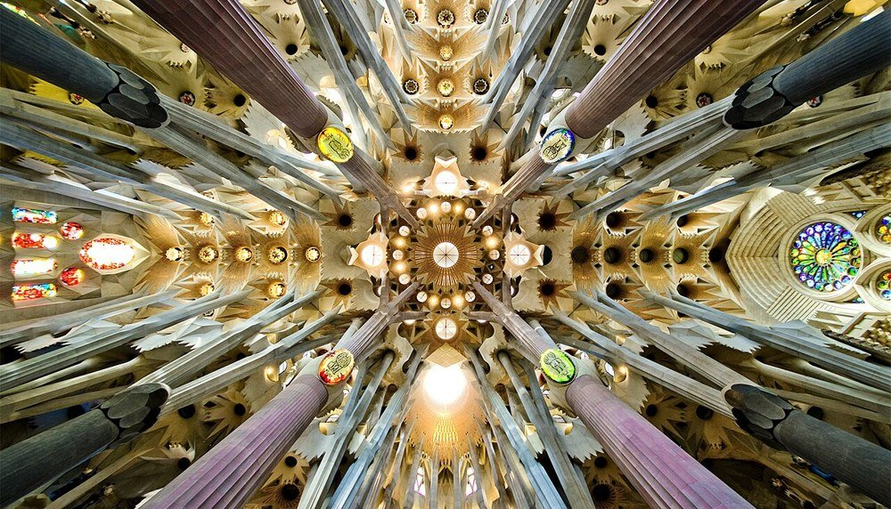

Sagrada Família, Interior Vaults
Antoni Gaudí (design) · designed by 1926; nave vaults completed 2000, interior finished 2010 · Stone and concrete
In copyright. Look and learn: shown for study, not for download. · Photo: SBA73, CC BY-SA 2.0
Gaudí designed the columns to branch like trees as they carry the roof; a column can begin as a square, turn into an octagon, then a sixteen-sided form, and end as a circle. He died in 1926 with the church between 15 and 25 percent complete, and in 1936 his workshop was broken into and his plans partly destroyed. The central nave vaults, 45 metres high, were finished in 2000, and the nave was roofed over in 2010, the year the church was consecrated.